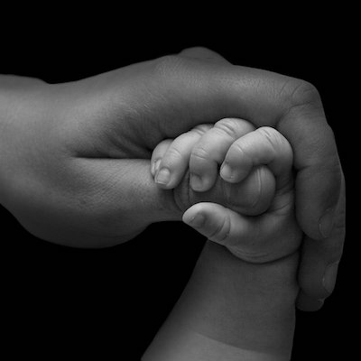
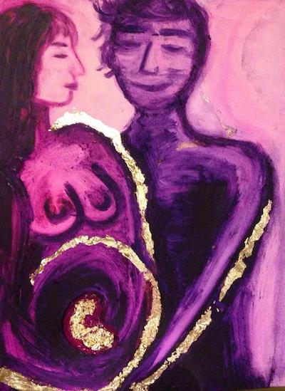

J’ai passé un diplôme d’État de sage-femme en France entre 2007 et 2012. Cette formation était focalisée à la fois sur la grossesse normale et pathologique, ainsi que sur la pédiatrie et la gynécologie préventive. La pratique a été très présente tout au long de ce cursus. J’ai pu accompagner 101 accouchements en tant qu’étudiante : des grossesses simples mais également des jumeaux, des triplés, des sièges et des bébés prématurés. Plein de beaux moments qui restent gravés dans mon esprit !
Pendant mes études, j’ai aussi travaillé comme auxiliaire de puériculture dans deux maternités parisiennes. Cela m’a donné de meilleures connaissances en allaitement maternel et en soins postnatals.
Ensuite, j’ai travaillé pendant un an en salle de naissances et en suites de couches où j’ai pu pratiquer 78 nouveaux accouchements naturels et en accompagner quelques uns de plus par césarienne.
Mais, j’ai vite senti que je ne pouvais pas donner le meilleur de moi-même dans ces maternités surpeuplées. J’ai alors décidé de devenir sage-femme libérale, près de Paris. Pendant trois ans, j’ai travaillé dans mon cabinet, en assurant les consultations prénatales, la préparation à la naissance avec sophrologie, le suivi à domicile des grossesses pathologiques et des retours à la maison après accouchement. J’ai aussi enseigné le massage bébé ayurvédique et pratiqué la gynécologie préventive, les consultations de contraception et la rééducation périnéale.
Quelques chiffres à propos de ma pratique de sage-femme libérale :
- 1085 consultations de grossesse et monitorings
- 900 cours de préparation à la naissance
- 900 visites post natales
- 4500 séances de rééducation périnéales
- 45 ateliers de massage bébé
- 500 consultations de gynécologie
- 2 accouchements à domicile

Pendant ces trois années, j’ai également passé un diplôme universitaire de gestion pluridisciplinaire de la douleur en pré et postnatal ainsi qu’une formation complète en rééducation périnéale.
A la fin de l’année 2015, j’ai immigré en Floride avec mon mari pour son projet professionnel. Ces deux années passées à Miami ont été une bonne opportunité d’apprendre l’anglais et l’espagnol et de comprendre la culture américaine. J’ai pu rencontrer et travailler avec de nombreuses personnes de différents horizons : des maraîchers en agriculture biologique, herboristes, doulas, chefs cuisiniers, nutritionnistes et artistes. Je suis devenue très polyvalente et je suis très heureuse d’avoir pu vivre toutes ces expériences aux États-Unis.
Néanmoins, ma pratique auprès des parents et des bébés me manquait terriblement. C’est pourquoi j’ai décidé d’aider les femmes en devenant doula à Brooklyn, où nous vivons désormais. Je souhaite ainsi me reconnecter à ma passion et à mon art de professionnelle de la naissance. Bien qu’être sage-femme avec un diplôme d’État français ne soit pas possible à New York, je sais que je vais adorer ma pratique de doula, éloignée de la partie technique de ma profession initiale mais plus proche de sa part spirituelle.
{kind=link}
{kind=link}
{kind=link}
{kind=link}